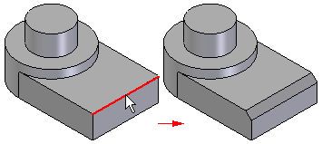
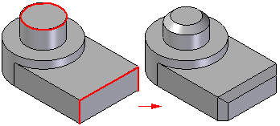
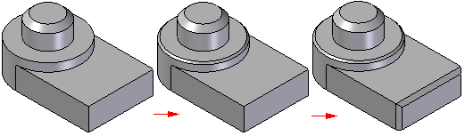

Chamfer command (feature)
Use the Chamfer command (feature)  to construct a chamfer between two faces along their common edge. Typically, you
should construct chamfer features as the model nears completion. On most parts, you
should not include small chamfers when drawing the profile for profile-based features.
This allows you to add the chamfers later as treatment features, which makes changes
faster and easier.
to construct a chamfer between two faces along their common edge. Typically, you
should construct chamfer features as the model nears completion. On most parts, you
should not include small chamfers when drawing the profile for profile-based features.
This allows you to add the chamfers later as treatment features, which makes changes
faster and easier.

Chamfer Construction Methods
You can use the Chamfer Options dialog box to specify the chamfer construction method you want to use:
Chamfer Feature Workflow
When you select the Chamfer command, the command bar guides you through the following steps:
-
Face Selection Step—Defines the faces from which you want to measure the setbacks or chamfer angle. This step is available only when you set the Angle and Setback or the 2 Setbacks options on the Chamfer Options dialog box.
-
Edge Selection Step—Defines the edges you want to chamfer.
-
Preview Step—Processes the input and displays the feature.
-
Finish Step—Finishes the feature.
Equal Setback Chamfers
When you construct Equal Setback chamfer features, you only need to select the edges you want to chamfer. You can chamfer multiple edges in one operation if they have the same setback value. When constructing chamfers where the setback value is the same, it is usually better to chamfer as many edges as possible in one operation.

If you want to apply different setback values to different edges, you must construct separate chamfer features for each chamfer size.

Angle and Setback Chamfers
When constructing a chamfer feature using the Angle and Setback option, you first select a face (1), and then select the edges to chamfer (2). The value you type in the Setback box on the command bar applies along the selected face and measures from the selected edge. For example, a 5 millimeter setback and 60 degree angle chamfer applies as shown (3).

Two Setback Chamfers
When constructing a chamfer using the 2 Setbacks option, you select a face first. The value you type in the Setback 1 box applies to the face you select, and the value you type in the Setback 2 box applies to the adjacent face. As in the earlier example, if you select the cylindrical face and the circular edge at the top of the part, and then specified a Setback 1 value of 5 millimeters, and a Setback 2 value of 12 millimeters, the 5 millimeter value applies along the cylindrical face, and the 12 millimeter value applies along the planar face on the top of the part.

Chamfers in Assemblies
When working in an assembly, you can use this command to construct an assembly feature.
How do I
Construct a chamfer featureEdit or move a chamfer
Construct a chamfer with equal setbacks
Construct a chamfer with unequal setbacks
Learn more
Adding chamfers to part edgesLook up more details
Chamfer command bar (ordered)Chamfer command bar (synchronous)
Chamfer Options dialog box (ordered)
Chamfer Options dialog box (synchronous)
Chamfer Equal Setbacks command
Chamfer Unequal Setbacks command
Chamfer Unequal Setbacks command bar